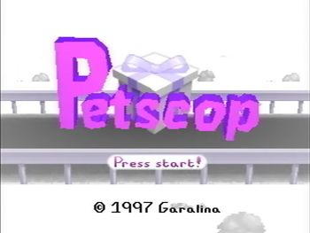

Petscop is a series of YouTube videos chronicling someone's bizarre experiences with a mysterious and unfinished PlayStation game known as the titular Petscop. The first video was uploaded on March 12, 2017.
is a series of YouTube videos chronicling someone's bizarre experiences with a mysterious and unfinished PlayStation game known as the titular Petscop. The first video was uploaded on March 12, 2017.
The series begins with the uploader of the videos, known as "Paul," saying he found the game with a strange note attached and wants to show a secret he discovered. At first, the game starts off normally, with Paul traversing through a colorful and cheery world with the goal of collecting the creatures known as "pets." However, once Paul inputs a code written on the note, it becomes clear that there is much more to be uncovered about the game...
After years of anonymity, the project's sole creator, Tony Domenico , revealed himself in November 2019. On Thanksgiving 2019, the series officially concluded with a total of 24 videos and a soundtrack
, revealed himself in November 2019. On Thanksgiving 2019, the series officially concluded with a total of 24 videos and a soundtrack .
.
There is a fanmade recreation, Giftscop, found here which allows you to play the game yourself.
which allows you to play the game yourself.
See also Nifty, a loose predecessor; Sheriff Domestic, a fanmade parody of the series; and Household Felony, a Spiritual Successor.
Petscop shows examples of the following tropes:
- Aborted Arc: Early Petscop videos had allusions to the tragedy of Candace Newmaker, leading many, further fueled by Game Theory, to believe the entire game was meant as an allegory for it. While yes, the references were intentional, they became an Old Shame for the creator that he regretted doing, and were dropped by the time of Petscop 11.
- Abusive Parents: Once things go dark, this becomes the Central Theme. This is best shown with Marvin, as, from what we get in the in-game notes, he emotionally abused Care and kidnapped her after a divorce, holding her in the school for around five months.
- Aerith and Bob: Some of the pets have strange names like Pen, Wavey, Roneth and Toneth... but then you have Amber and Randice.
- All There in the Manual: Once the series was finished, Tony finally added subtitles to every video. The subtitles confirm that Paul is playing the game while seated in an unmoving car; the caller on the other end of the line is Belle; and that the weird object that is clicking in the school in Petscop 23 is considered an in-game boss.
- Amazing Technicolor Population: Character colours in the game range from green, to blue, to purple, to red, to yellow, to pink.
- Ambiguous Gender:
- Some of the Pets have this: Randice (due to not having facial features, like the rest, and its description is never shown), Wavey (its description is never shown as well) and Roneth (because it hasn't been caught yet).
- Technically the game's protagonist, since neither "Paul" or the game ever refer to it directly.
- Ambiguous Syntax: The game/series' title itself, as it's not exactly clear what it means. Either "Pet's Cop" or "Pet Scop".
- Ambiguous Situation: Petscop 19 makes reference to "Daniel's game," suggesting that he is a creator of Petscop, possibly Rainer himself. It's not explicitly confirmed, though.
- At one point during Petscop 14, Paul's save files are deleted, and a new file named "Strange situation" appears instead.
- Anachronic Order: Petscop 1 through 10 seem to be in chronological order. Everything afterward is suspect due to the inclusion of demo footage. Paul uses some of that footage to explore new areas, but his movements also appear later in those demo videos that were presumably recorded before he even started playing. Furthermore, Petscop 22 continues directly after Petscop 10. Sections without Paul speaking may or may not have been recorded by him.
- And Now for Someone Completely Different: An increasing number of later videos feature gameplay from players other than Paul.
- And the Adventure Continues: The story ends with Tiara inviting Paul to investigate something together with her. They both walk in front of Lina sitting on a bench and disappear.
- Anti Poop-Socking: The game's pause screen leaves the rather goofy message of "Your butt leaves a cavity in the chair," at the end of Petscop 20, which is likely an attempt to get people to stand up and do something else if they've been playing for a while. This likely ends up referring to the "ghost room," where players are presumably trapped in a room with only a chair and Petscop.
- Arc Symbol:
- The tool. It is a giant object that serves as Mr. Exposition which Paul can ask questions to, and several other smaller tools appear throughout the game serving various purposes.
- The house, school, and windmill are the three most prominent and important locations in the series.
- Later videos would add cars and wheels, which appear repeatedly, hinting at a car accident playing a role in the backstory.
- Arc Words:
- "Newmaker," the title of Rainer and the Player Character, and the "Newmaker Plane," the Dark World below the Gift Plane and primary setting of the series.
- "Rebirthing"
 , and, related, "Do you remember being born?", a question frequently asked by Tiara.
, and, related, "Do you remember being born?", a question frequently asked by Tiara.
- Armless Biped: All forms of the player character are armless - they actually share an identical armless torso sprite. At one point it's mentioned (and later confirmed) that the guardian doesn't know how to open doors due to this. A popular theory is that they're wearing straitjackets.
- Art Shift: After Paul inputs the code written on the note and leaves the first level, the art style suddenly shifts from a cheery, bright and colorful world to a dark field with more realistic graphics and thick shadows obscuring the surroundings.
- Attract Mode: Used as a plot point. Leaving the game alone on the title screen plays a demo consisting of a recorded version of a past play session. However, some things in said sessions are different, such as a door being open in the demo while it isn't in normal gameplay, allowing the player to see what's behind the door and interact with objects in that room to make progress, and plenty of recordings are of other people playing the game, allowing the player to see what happened in other player's playthroughs.
- Big Bad: The series has two antagonists. Marvin V. Mark is the primary, in-game threat, as he is Care and Belle's abusive father (and kidnapper in Care's case) who wants to "rebirth" Care, believing her to be he reincarnation of Lisa Lezkowitz, and all the mysterious happenings in the game tie back to him. In the real world, Aunt Jill, leader of The Family, took over the Petscop YouTube channel and is holding Paul hostage, forcing him to play the game for some reason.
- Big Bad Ensemble: Marvin V. Mark is the primary, in-game threat, as he is Care and Belle's abusive father (and kidnapper in Care's case) who wants to "rebirth" Care, believing her to be he reincarnation of Lisa Lezkowitz, and all the mysterious happenings in the game tie back to him. In the real world, Aunt Jill, leader of The Family, took over the Petscop YouTube channel and is holding Paul hostage, forcing him to play the game for some reason.
- Body Motifs: Eyebrows are very focused on throughout the series. Paul even changes Care’s face in the Child Library for the sole reason that “eyebrows seem to be important.”
- Bookends: In the second video, Paul tells his friend that "we can investigate this together." The Stinger has Tiara/Belle, the friend, saying the same thing to Paul at the very end.
- Breather Episode: Petscop 21 is simply a recording of Care playing the game and "dancing" around in-game. It turns out that the video syncs up with the Ace of Base song "The Sign." Considering the numerous lore-heavy episodes released on the same day, it's definitely a relief.
- Brick Joke:
- Paul is unable to catch one of the pets (Toneth) in Petscop 1 due to them not being in Even Care, otherwise capturing everything else available (except Roneth) before heading to the Newmaker Plane - where the rest of the series takes place, and any business about pets and catching them is long forgotten. In Petscop 6, after a very tense scene, Toneth finally appears in the Newmaker Plane, and Paul is able to catch it.
- Roneth is an even longer example of this, as he is also left uncaught in Petscop 1 and is caught in Petscop 13, exactly a year later.
- Petscop 19 has a few in regards to the 1st episode. Previous player phil simply stands in front of the off-the-ground Roneth. Another player, amber2, has trapped themselves in the cage with Amber and is also unmoving.
- Bystander Syndrome: In Petscop 5, the pink tool's responses beg Paul to turn off the PlayStation, and tell him that Marvin picks tool up and hurts an unnamed individual while it continues to run. Paul seems to shrug the warnings off as the game pretending to be haunted, and it's implied that Paul keeps the console on for the entire series, the most egregious example being when he leaves the game alone for four hours, recording it the entire time, to fulfill the red tool's earlier request to keep watching the windmill.
- Call-Back:
- Petscop 9 has Paul finally become the "shadow monster man" by going down the stairs of the Flower Shack and turning right at the very end.
- Petscop 11 has Paul try to open the door to the house after unlocking it, only to be told his character still cannot open doors, just like what happened in the first video when he tried to open a closed door.
- Petscop 14 finally features images of the website mentioned in the note that came with the game. It appears to be a set of "discovery pages" documenting aspects of the game, though the low resolution prevents the viewer from making out any details beyond in-game screenshots and title text, let alone the URL.
- Petscop 19 and 24 prove that Belle/Tiara is indeed a "Petscop kid" and "very smart."
- Petscop 20 shows what Marvin did when the secret code from Petscop 1 was entered. It also features a call back to Petscop 5 and 6: Paul notices that the camera has changed positions; in 20, Marvin has the option to position the camera himself.
- In the secret ending of the Soundtrack video, Belle says "Do You Remember Being Born?" and "We can investigate this together," two lines that were featured in Video 2.
- Captain Obvious: When Paul happens upon Michael Hammond's grave, marked 1988-1995, he remarks "that's a dead kid."
- Cartoon Creature: We have this in two instances.
- One is with a pet named "Pen", and, while we have a clue as to what a few other pets are (Amber is a ball, Toneth is a bird, Randice is a flower, Wavey is a cloud, and Roneth is some weird combo), it's hard to describe what Pen is. Her torso appears to be a closed umbrella, she looks something like a doll, or, given her connection with mathematics, she looks like a scale (see here) but there isn't too much in real life one can compare her to, besides that she has a face.
- Paul's player character, "Newmaker". It's pretty hard to say what he is.
- One is with a pet named "Pen", and, while we have a clue as to what a few other pets are (Amber is a ball, Toneth is a bird, Randice is a flower, Wavey is a cloud, and Roneth is some weird combo), it's hard to describe what Pen is. Her torso appears to be a closed umbrella, she looks something like a doll, or, given her connection with mathematics, she looks like a scale (see here
- Censor Box: Whoever is uploading to the channel is censoring objects and presumably cutting out footage. Petscop 7 ended with a message listing objects to be censored in future videos and that they can't state their reasons for doing so at the time.
- In Petscop 7, it was an object on a table in a child's room - whatever it was confused Paul. Petscop 20 revealed it was a red vase with a sunflower in it, on its side, which was used by Marvin to abuse Care by distorting her reflection and using the distortion to convince her that she is ugly.
- In Petscop 9, the big present appears. Instead of censoring the box itself, what's censored is the giant, red, upside-down, spinning pyramid that comes out of it; the object seems to disturb Paul, who makes this evident. Petscop 20 revealed the pyramid had Care's icon on it.
- In Petscop 10, the red tool's answer to Paul's question "Where was the windmill?" is censored. This is never revealed, unlike the others, but it is hinted to have been a set of coordinates that were too close to wherever Paul is.
- In Petscop 14, something on the wall of Care's house is censored. Petscop 20 revealed this to be one of Marvin's stenciled murals.
- In Petscop 16, the phone number that the game provides is censored, although the area code can be briefly glimpsed during a transition. It points to Southern Connecticut, possibly where the series takes place.
- Central Theme: The game has heavy themes of child abuse, especially in adopted families, and the monstrosity of it. In particular, the game seems to depict those who believe adopting children is the same thing as getting a pet that must obey your every command.
- Chekhov's Gun:
- In Petscop 1, Paul's note describes how to "walk downstairs and, in the bottom, turn right instead of proceeding" to become a "shadow monster man." Paul ignores this, instead repeating a cheat code to enter the Newmaker Plane. Eight videos later, Paul finally tries the original instructions in the entrance to the lower level of the barn and becomes a shadow monster man, allowing him to progress into the windmill.
- Paul catches the moving tool in a later part of the game by luring it into the bucket. He finally caught Roneth (via a new file) the same way.
- Closing Credits: Done In Petscop 24 through the Book of Baby Names in the Pause menu.
- Colour-Coded for Your Convenience: To help identify certain characters, they are represented with color coded text:
- The tool is red, unless it turns pink, in which it is pink. In Petscop 22, Paul's name is written in red.
- Care is yellow. In Petscop 14, Paul's words are written in yellow, hinting at a connection between the two.
- Marvin is heavily associated with green.
- Anna is blue.
- Tiara/Belle is purple.
- The unknown character in Petscop 9-12, heavily implied to be Rainer or another developer, addresses the player(s) and appears to have a conversation with Anna in the default white color of the text box, and might be the writer of at least a few of the short messages in black text in the pause menu.
- Creator Cross-References: There are a few throwbacks to Domineco's previous project Nifty, such as re-used tiles and sounds. In-Universe, Garalina was also the creator of Nift as well as Petscop.
- Darker and Edgier: Petscop goes from a fun (albeit unfinished) game about collecting pets and finding their homes to a dark and twisted story (possibly) inspired by the real-life child killings that happened as a result of rebirthing therapy.
- Dark World: The Newmaker Plane is a larger and darker world underneath the Gift Plane, with many locations and puzzles corresponding to the Even Care puzzles.
- Death of a Child:
- Michael Hammond, who lived from 1988 to 1995, which would make him six or seven years old at the time of death. His tombstone is found in video 2, along with the inscription "Mike was a gift."
- As of Petscop 17, another has been revealed: Lina Leskowitz, the windmill girl, who lived from 1968 to 1977.
- Disappeared Dad: While Paul has mentioned his mother two times, he never refers to his father. Although, considering that Paul has the same birthday as Care (who is Marvin's daughter), and how the last thing he types in Petscop 23 before Marvin ambushes him in his ghost room is "Da" (short A, as the gamepad language is phonetic)...
- Disguised Horror Story: Petscop is a fictional Let's Play series wherein Paul plays what starts as a fun (albeit unfinished) game about collecting pets and finding them homes, with a colorful environment called the Gift Plane, happy music, and overall looking every bit like the kid-friendly time-waster that was so common in the PS1 era. There are a few hints of something off (like the fact that the pets are scared of the Player Character), but it seems harmless. Until, that is, Paul enters a cheat code in Roneth's room. The music suddenly stops, and Paul ventures outside Even Care to find not the peaceful-looking Gift Plane, but a darker, mysterious new world called the Newmaker Plane. From then on, Petscop moves to a dark and twisted story involving themes like child abuse, references to the tragic Candace Newmaker incident, and cryptic events that increasingly seem like Paul himself is a key figure in.
- Does This Remind You of Anything?:
- In Even Care, there are signs about bringing pets home. Two of them say "When choosing pets, pick somebody that you like. You don't have to love them right away," and "Don't be discouraged if they run from you! They really want a home. They're afraid. Show them there's nothing to be afraid of." It's worth mentioning that in Petscop 9, the sign changes from 'find somebody that you like' to 'find one that you like'. This language far more resembles adoptive children than pets.
- There's a pet who's kept in a cage, and is awarded for staying there. Her description is "Amber is a young ball. She's afraid to leave home. If her home is good, this is not a problem. She is very heavy, and that makes her life a little harder, as well as yours. What's the safest place you can put her in? You should start thinking about that." In hindsight, the reactive attachment disorder themes were there from the beginning. And to bring it home, there are human children later available as "pets."
- "Child Library accepts people." Paul gives Care NLM—a haggard-looking child—to the Child Library despite knowing that he can turn her into Care A, a happier version. It can easily be seen as an allegory for (adoptive) parents who "give up" on their child and "give them back" rather than raise and treat them properly. He immediately enters her room and "catches" her again, suggesting that he was simply testing the Child Library's return slot.
- Doppelgänger: A recurring theme in the series, likely related to the "rebirthing" process. Some characters possess doubles who are strangely and contradictorily identical to them:
- The biggest example is Paul and Care. They have the same facial features and are the exact same age. Paul has no recollection of Care, though it seems that others do.
- Care may be an attempt at one for her aunt Lina via rebirthing.
- Double Take: Marvin does one in Petscop 20. The picture of the windmill is the only one he looks at twice - he approaches it, examines it, exits out, stands there for a few seconds, and then examines it again. The scene cuts before we get to see what he does afterwards. Given his involvement with the windmill, this is telling.
- Driven to Suicide: In an example very much not played for laughs, Rainer is heavily implied to have killed himself immediately after giving Petscop to "The Family".Fuck you all, and fuck me as well. Check your bathroom now.
- Drone of Dread: Tends to play whenever Paul stares at the windmill.
- Dual-World Gameplay: As Paul discovers, things he does in the Gift Plane/Even Care affect things in the Newmaker Plane. For example, catching Care NLM in the Newmaker Plane requires him to go to Pen's room in Even care and set the interval meter to -1.
- Everyone Is Related:
- It is heavily implied that almost all of the major figures in the story are a part of the same extended family. The in-game "Child Library" is evidence to this, as it is explicitly stated that only family members have their facial features recorded in it. The biggest bombshell in this regard? It includes Paul, who finds his own room in the Child Library by inputting the facial features of Care and the eyebrows of Michael Hammond.
- Curiously subverted with Belle/Tiara, the friend who Paul is talking with, who is explicitly stated to not be part of the family in Petscop 12 and 22; why exactly she is the only one in the game not to fit this pattern is unknown. What makes this even stranger is that Tiara's last name is apparently Leskowitz which is the same as Paul and Lina/the windmill girl. It is suggested that she is adopted, meaning she is not biologically a part of the family.
- Exact Words: For a long time, the description of the Petscop channel (believed to have been written by the mysterious Family running the channel) read as follows: "The purpose of this YouTube channel is to preserve and display the recordings within the video game "Petscop" while keeping some of their content private." Note the use of the phrase "recordings within the video game," rather than "recordings of the video game." That's because, as shown in Petscop 14, and again during the Easter 2019 uploads, the game records the controller inputs of everyone who plays the game, and has a very large number of previous recordings stored within it, including some of Marvin and Care.
- Fictional Video Game: The titular Petscop is a PlayStation 1 game made by the fictional company Garalina. It is a puzzle-exploration game where the Guardian must go through 8 levels and catch the creatures known as Pets, solving puzzles to catch them. The game is unfinished and unreleased- Paul got it through his mom who had it.
- Flower Motifs: The series has Care associated with daisies, which is both a reference to Daisy-head Mayzie (and Loves Me Not) and how her father showed Care her distorted reflection in a flower vase containing a daisy in an attempt to convince her that she was ugly.
- Foolish Sibling, Responsible Sibling: According to their descriptions, Roneth is the responsible to Toneth's foolish because he learns from the latter's mistakes and doesn't need to be watched all the time (implying that Toneth does need to be watched all the time).
- Freeze-Frame Bonus:
- In Petscop 19, a couple of times, the pause menu appears for a second before the game screen zooms in and covers it completely. Pausing at the right time (if you need help, the "comma" and "period" keys make the video advance by one frame at the time) it's possible to see that the text under the score changed:
- At 2:03, the text became "Everything is a trick◊."
- At 3:15, it became "There are no changes, only replacements."
- At 2:03, the text became "Everything is a trick
- In Petscop 23, at 4:12, some pink text can be seen that reads "Push bed against hidden door," which sound ominous considering what happens immediately after...
- In Petscop 19, a couple of times, the pause menu appears for a second before the game screen zooms in and covers it completely. Pausing at the right time (if you need help, the "comma" and "period" keys make the video advance by one frame at the time) it's possible to see that the text under the score changed:
- The Ghost:
- Michael Hammond and Tiara, unlike Care (who has a few depictions of her in-game), however, Michael does have his face on a tombstone.
- Rainer, the developer (or one of them), who's also serving as The Voice, as he only gets mentioned by Paul and we see his notes in-game.
- Marvin was this initially, as Tool (turned pink), says, "Marvin picks up tool and hurts me when PlayStation on."
- Guide Dang It!: In-Universe variant. Paul cannot figure out how to catch Roneth- every time he approaches Roneth in his room, the pet simply flies away, then returns once Paul's character backs up a bit. It takes until Petscop 13, a whole year later, for him to figure out how to do it- he needed to push the bucket in Wavey and Randice's room to Roneth's room, despite the game not hinting that pushing objects out of rooms is even possible, and put the bucket under where Roneth descends, thus Roneth goes in the bucket, allowing him to be caught.
- Haunted Technology: Many fans believe this is the source of the game's strangeness, but Paul himself subverts this trope, expressing his belief that it's not "ghosts," but that the happenings are pre-recorded. It was left ambiguous until Paul himself seems to be mentally affected by the game looping and resetting. As of Petscop 14, Paul has encountered an in-game conversation that he remembers having in real life during the previous year, negating any possibility of coincidence. Despite his insistence that it has to be a prank, he quickly looks up how to modify a CD-R and is disappointed to find that doing so in a way that would explain the existence of the conversation would have been impossible.
- Hidden Villain: In video 5, a character named "Marvin" is revealed, who is described as hitting a child, Mike, with a tool for having his PlayStation on. From this it can be assumed he is an evil person, but there is not much else known about Marvin. In video 8, however, a representation of Marvin seems to appear — and he looks the exact same as the player character's sprite, but with some sort of green object replacing/covering the head.
- Holiday Episode: Many of the episode uploads have occurred on special days, with the involved episodes slightly themed around that holiday:
- Christmas Episode: Petscop 11 was uploaded on Christmas Day, 2017. Apart from a house with a Christmas tree in it, this video is devoid of actually celebrating the holiday, to the point that Paul doesn't seem to recognize the significance of what looks like a fir tree on December 25 on the calendars.
- Halloween Episode: Petscop 16 was released to YouTube on 10/31/2018, which is Halloween. Despite its short duration, its content was quite disturbing.
- Petscop 17 to 21 were uploaded on Easter, 2019. The episodes were themed around Easter eggs, showing in-universe behind-the-scenes.
- Petscop 22 to 24 were uploaded on Labor Day, 2019. This holiday is also associated with the first day of school, and the episodes were focused on the school which had sometimes appeared in previous episodes.
- Petscop Soundtrack was uploaded on American Thanksgiving, 2019. On Twitter, Tony thanked everyone who had followed the story to its completion, and released the soundtrack to YouTube and Bandcamp in return.
- Identical Stranger: The series draws a heavy amount of parallels between Paul and Care. They share a birth date, the same facial features and Paul reacts uncomfortably to an object that is later revealed to be a vase that Marvin used to emotionally abuse Care. The nature of their similarities is never elaborated upon beyond implications.
- In-Character Let's Play: The game is initially styled as a Let's Play narrated by the fictional Paul.
- Interface Screw: In Petscop 7, while in the Quitter's Room, Paul hears the usual ominous short chiptune from his left speaker and goes to find Tiara gone.
- Kidnapped by Family: It's revealed Marvin kidnapped Care and held her in the school for 5 months to rebirth her into Lina.
- Lampshade Hanging:
- The first few episodes contain things that are typical for a story about a video game that is haunted. From graves, to weird messages, to just being creepy. Near the end of Petscop 6, Paul does a long talk addressing this, talking about how the game is trying to seem haunted, and he addresses things like the hidden messages, and basically says he doesn't buy it.
- In Petscop 14, when Paul is doing the Moon Logic Puzzle of getting into the parent's room, when he goes up to the table with the disk, not knowing what's going on, he assumes if he presses x, a text box will appear. He says "I’m gonna press–I pressed X, and a text box appeared with text in it, that is probably cryptic, and we don’t really care too much about it, so we’re gonna press X a bunch of times..." He acknowledges the fact that most stuff in the game is cryptic.
- Let's Play: The series is in the style of one, and is essentially a fictional Let's Play for a Fictional Video Game. Paul, the one playing the game, gives his commentary on the odd and disturbing content, and is recording the videos to show to an unseen friend of his.
- Lie to the Beholder: Inverted: Players of Petscop see the Guardian (the Player Character) as a Cartoon Creature with a chubby green head. When others see them, the green head is something completely different that seems to be unique for all individual players. (Tiara is a crudely-drawn girl, Marvin is a green face and Paul is a red pyramid.)
- Living Shadow: The "Shadow Monster Man," implied to be Marvin. In early episodes, he was only seen as a pitch black figure roaming the Newmaker Plane. In Petscop 9, Paul glitches the game's lighting system to temporarily become one, gaining access to the Windmill.
- Loves Me Not: There is a large daisy in a shed. As Paul plucks its petals, the girl it is connected to in the room next to it distorts (i.e ending on the conclusion of 'loves me not', or rather, 'nobody loves me'). Later on, it turns out that the threadmill is connected to it, and setting it to -1 (i.e changing the outcome to 'loves me') allows Paul to finally acquire the girl. It's even lampshaded that you needed to lie (as a flower obviously has no -1 petals) to get her.
- As the words 'good grief and alas' are found elsewhere, it is likely to refer to Daisy-Head Mayzie.
- Ludicrous Precision: Petscop 12 reveals how long the game has been played down to the second. Or, to be more specific, 553758221 seconds or 153822 hours. That's over 17 years.
- Madness Mantra: Toneth's description ends like this, with his name being repeated over and over again.I guess that's toneth then. toneth toneth toneth toneth toneth toneth toneth toneth toneth toneth toneth toneth toneth toneth toneth toneth toneth.
- Magic Music: Songs played on the Needles Piano are this, implied to be the final step of the "rebirthing" process. There are two known songs, whose titles are revealed via subtitles:
- The song played in Petscop 11 (which Paul also hums in Petscop 14) is "Care's melody."
- The song played in Petscop 23 is "Paul's melody."
- Meaningful Echo: When Marvin kidnaps Care, the text says "Care left the room," just like the text in video 2 that said the same thing.
- Meaningful Name: Tiara was the middle name of Candace Newmaker, the girl whose tragic death was alluded to in earlier episodes.
- Mercy Kill: Toneth's description has a story about a person whose dog gets hit by a car and survives, and they end up being the only person who still wants to put it down. This story ends up going off the text box because of how long it is.It makes me think about the dog actually. Because when the car hit him I thought "at least it will be over soon." He survived it, and I was the only one who still wanted to put him down.
- Mind Screw: The cryptic writing and puzzles are strange enough, but things start to really get into this territory when inexplicable anomalies happen, such as the game perfectly mimicking the player's movements *before* they've performed them. In general the story and backstory are incredibly ambiguous and strange even as the series gives more and more content to work with.
- Mickey Mousing: Petscop 21 syncs up perfectly with the classic Ace of Base hit "The Sign."
- Mirror Routine/The Mirror Shows Your True Self:
- Mirrors, and mirrored actions, are a repeating motif. The Quitter's Room has Tiara on one side and Paul on the other, their movements synced, most of the time. In Petscop 12, the Mirror Routine incident from Petscop 10 is repeated, only from the other person's perspective; they now sport Guardian's face, while the original Guardian sports a pyramid head.
- As the series goes on, the player character in the "DEMO" recordings starts to precisely mimic Paul's earlier actions. The first obvious example is in Petscop 9: in the first scene, the demo player lowers the number on the treadmill with the exact same timing that Paul pulled the petals off of the giant daisy in Petscop 2. The demo deviating by lowering the count to -1 gives Paul the hint he needs to catch Care NLM. Later, Paul realizes that mimicking what the green-headed man does helps him make progress, but he also starts falling into new loops that he doesn't seem to recognize...
- Mons: The game appears to have a focus on collecting strange creatures referred to as Pets.
- Mood Whiplash:
- When Paul catches Toneth in video 6, the same fun, colorful animation that played in video 1 whenever he caught a pet appears, clashing with the dark ambience that's been shown ever since Paul entered the Newmaker Plane.
- The pause screen remains the same as it was from the beginning, bright and pink.
- In Petscop 2, when Paul has exited the Child Library, he decides to explore whatever is to the right... only to find a void.Paul: We're still not done, because we still have whatever is over here. Or not. Okay.
- A small part of Petscop 9 involves "Paul" going back to the original beginning of the game, before he entered the Newmaker Plane. At least, it looks like Even Care. Pay attention, and you'll notice that a few things are a bit off now...
- Moon Logic Puzzle: In-universe. 14 opens with the revelation that several of the segments marked "Demo" are actually the game having recorded Paul's inputs for its demo mode and proceeding to play them back in a different area of the game, or the same area with different rules. As a result, some parts of his progression have involved closing his eyes and pretending he's navigating the rooms he sees in some demos, then waiting for the game to play it back at a time of its own choosing to see what his previous actions produced.
- Mr. Exposition: "Tool" is the closest thing to an expositor we have.
- Newhart Phonecall: Played very much for tension, where Paul has often called the original intended recipient of his videos. We never hear their voice, and all we know for sure about them is that they are not "part of 'The Family'", and as such, do not have a room in the Child Library.
- No Brows: Care has no eyebrows. It's later revealed Marvin shaved them off in order to convince her she was ugly.
- No Name Given: This applies to both the uploader of the videos and the game's protagonist. There is no clear name given to either of them. At the beginning of the first video, the uploader names his save file "Paul", but it is unclear whether it is his own name or the name he wants to give to the protagonist. For the protagonist, in video 5, the strange artifact known as "TOOL" answers the question "Who am I?" with "Newmaker". This answer is vague, as TOOL is not clear who is named "Newmaker". Despite this, fans have just taken to referring to both the uploader of the videos and game protagonist as "Paul". In order to differentiate between the uploader of the videos and the game protagonist, a popular solution is to refer to the video uploader as "Paul" and the game protagonist as "Naul", a combination of "Newmaker" and "Paul".
- Non Sequitur: The incredibly disturbing description of Toneth, complete with Madness Mantra, ends with the words, "it's yucky outside."
- Noodle Incident:
- The windmill's disappearance in 1977 mentioned in Petscop 9. It's not really said what happened, besides that the windmill disappeared and Anna's sister didn't come back with them, either. However, the video implies that it was a crime (which is interpreted to be a murder), and that Marvin had a hand in it.
- Why the Gift Plane staff left isn't said and neither is it said if they left of their own accord, if something happened, or if they simply weren't programmed into the game. Likewise, we don't really know what happened to the other forty-three pets besides the ones we see.
- How Michael Hammond died isn't known either. There was something that happened between Marvin and Rainer, which is hinted to be related to this. The way that the inscription on Michael Hammond's grave lingers onscreen in Marvin's gameplay could be interpreted as accusatory, implying that he may have played a part in Mike's death.
- The circumstances of Lina's death are also unknown, but its heavily implied she was run over by a car while no one was paying attention to her.
- Nothing Is Scarier: This whole playthrough has much of the "Nothing At All" type.
- As of Petscop 13, nothing seen in a typical horror game or creepypasta is present, aside from darkness and disturbing text. Usually, the only source of light emanates from the player character, making every room unusually disturbing. Even when the room is lit, there's always something very off about how the room looks; especially, the school.
- We don't know what the black boxes were censoring in Petscop 7 and 9. All we know is that it noticeably shocked and confused Paul, based on the shakiness in his voice afterwards. He talks less and less after this event. The censor in Petscop 9 is strong enough for a Precision F-Strike. The later videos strongly imply that the censored objects tie Paul to the game and Care in some way. It is eventually revealed to be a vase with a flower that Marvin used to abuse Care, and a pyramid with Care's icon, respectively.
- At the end of Petscop 22, the Guardian enters the basement of the school. A Drone of Dread plays as Guardian walks through a doorway on the left. The camera pans over increment by increment and the video ends before we see what is there. The atmosphere is crushingly brutal.
- In Petscop 23, Marvin asks Paul which room he is in. After getting the answer, he says "Thanks Here I Come." Paul responds fearfully and then both are away from the game for a long time. After whatever happened to him, Paul picks up the controller and pleads to Tiara with a single "Help."
- Ominous Visual Glitch:
- Throughout the series, composite video artifacts cause some visual elements to flicker or distort in various ways. The most famous example is in the first installment, when Paul is putting in his name, and the button options are below. The Triangle button is shown to mean "Go Back" this seems like it means if you press that button, you'll go back, but the triangle is fluttering, almost like it's scared. This can be seen as a warning, telling the player to go back.
- In Petscop 2, when Paul removes all petals from the daisy, and goes to see Care under the shack, Care's whole body is glitched, pixelated, has no face. Care now is moving in a weird way, almost like they're melted.
- The face on Mike's grave appears to randomly move throughout the series. This is probably caused by nearest-neighbor filtering on the texture.
- Near the end of Petscop 5, when Paul is wrapping up, his avatar's face and body and the area around it suddenly glitches a bit, and it kind of looks like the avatar's face is melted. This is most likely a video compression artifact.
- In Petscop 15 around 2:50, when the avatar is sitting on a chair, for a split second, a small amount of a copy of the avatar appears to the right of it. This is likely caused by a video compression artifact.
- Precision F-Strike: While relatively rare, the series does contain a few f-bombs, both from Paul's commentary and from the supposedly kid-friendly game itself.
- Whatever Paul saw in Petscop 9 (the object is censored) has him give this reaction:Paul: What the fuck?
- Care A's description, written by Rainer, gets one in Petscop 11:Fuck you all, and fuck me as well. Merry Christmas. Check your bathroom now.
- In Petscop 14, when the game crashes simply by Paul attempting to enter a room, Paul emits a single "fuck" right before the video ends.
- In Petscop 22, the game delivers one through a text box- a character who can be assumed to be Care says to Jill "stop fucking ignoring me".
- In Petscop 23, Marvin delivers one when Paul plays the needle piano incorrectly.
- Whatever Paul saw in Petscop 9 (the object is censored) has him give this reaction:
- Production Throwback: One which flew under the community's radar for over a year, due to the creator's anonymity, is buried in Petscop 15: Belle/Tiara tells the player to "Press Nifty" to unlock the texture editor. Nifty turns out to be the name of a previous game made by the creator of Petscop.note
- Punctuated! For! Emphasis!: Due to the way the in-game communication system works note , every sentence made by a player is presented as this. This is used to great effect in Petscop 23, when Paul tells Marvin which room he is in.
- Marvin: Thanks. Here. I. Come.
- Recycled Soundtrack:
- One sound effect in Petscop is recycled from Tony's old project Nifty. Also the song "explore" is a revamped version of a song from Nifty, with the song "explore-min" mixed in.
- The Credits Medley is just the bass and drum parts of the song "level1."
- Red Herring: The real-life Candace Newmaker case is referenced a few times early in the series. While it originally led many to view the game as re-exploring the child abuse involved in that case, it became clear by Petscop 11 that the series was more of an exploration of the damage done to children by adoptive and ex-parents who treat them more like objects than people, and that all Newmaker references were merely easily digestible allusions to fill in the hidden game's setting. Though Marvin's ultimate plan, at least, seems to revolve around "rebirthing" Care into Lina.
- Retcon: The reveal of the Player Character's name as "Guardian" instead of "Newmaker" is most likely one, considering that Tony considers the references to the Candace Newmaker case an Old Shame. The term Newmaker was phased out before Petscop 10.
- The Reveal:
- Petscop 11 reveals a good chunk of the backstory when the house and school are finally discovered. In the house, a note left by Care's mother explains that her husband may come around after dark and pleads with the intended reader to stay overnight if possible. Later that night, Marvin abducts Care.
- Petscop 14 drops the bombshell that Marvin is Care's father.
- Petscop 17 through 20 are essentially reveal after reveal after reveal, including a Sound Test option, Care's full name (Carrie Mark), the names of various family members, the windmill girl's identity (Lina Leskowitz), recordings of at least 48 different people who took part in Petscop, and the censored objects. We also see what happened during Marvin's playthrough of the game: after entering in the secret code to access the Newmaker Plane, the game/Rainer taunts him, stating that he's going to remain there until he uncovers the unmarked grave that Rainer is looking for.
- Petscop 22 reveals the person on the other end of Paul's phone call is Belle (by way of the subtitles.) It's also implied that his family is the Family that took over the channel and was presumably ordering Paul to record more videos against his will.
- Petscop 23 gives us Tiara's last name. It's Leskowitz, which is Paul's last name. The note he finds with her name has her referring to herself as "Mommy."
- Riddle for the Ages: The series has tons of this. The series' surreal, almost dreamlike narrative, combined with the fact that the story takes the form of an in-universe Let's Play being recorded by an Unreliable Narrator and edited by a different Unreliable Narrator, means that huge chunks of the plot are left up to the reader to interpret. Some of the major ones include:
- What happened between Marvin, Anna, and Lina years ago that supposedly caused both the windmill and Lina to disappear and Lina to later be reborn as her sister's daughter? Did those things actually happen at all, or is it just something Rainer falsely believes? The only concrete clue we get comes in Episode 17, when the player happens upon a grave for Lina with the epitaph "They didn't see her", which only raises further questions.
- During Episode 14, the game poses a riddle to the player: there are two photos side by side. In the first one, the door is closed, while in the second one, taken later, it is open. However, no one opened the door, the door didn't open by itself, and in fact the door didn't open at all. How is this possible? The game never provides an answer to this riddle, and it's implied to be something only Marvin would know the answer to.
- What ultimately happened to Marvin? It's unclear whether the in-game version of him is a Virtual Ghost or simply an AI replica of him based on his saved gameplay (although the series seems to lean slightly towards the latter), and while Episode 23 does feature the in-game version of Marvin seemingly giving up after his plans to "rebirth" Care fail, we have no evidence at all as to what happened to the real world Marvin.
- Room Full of Crazy: Petscop 20 states Marvin stenciled all over the walls in a room and after he was kicked out of the house, Anna had to paint the entire room black to cover it up.
- Same Surname Means Related: The series often uses Given Name Reveals with the last names "Mark" and "Leskowitz". Of course, given that this is an In-Universe case of both Write Who You Know and retelling events, this is justified.
- Scare Chord: In Petscop 2, when Paul looks at the picture of the school, a sound of dread and foreboding plays. The school is The Very Definitely Final Dungeon and the place where Marvin held Care hostage to "rebirth" her.
- Self-Deprecation: The creator of the series is known as Tony. In the Book of Baby Names, Tony is credited as a "dummy."
- Shout-Out:
- The phrases "good grief and alas" and "nobody loves me" are each a reference to Daisy-Head Mayzie by Dr. Seuss. As is the large daisy in the shed in the Newmaker Plane which is directly above Care NLM.
- "Sit here for the present," which Marvin says in Petscop 15, is a reference to Ramona the Pest by Beverly Cleary. This book is referenced again in Petscop 24, where the name "Ramona" is linked to "pest."
- In Petscop 21, the movements of Guardian (presumably controlled by Care) perfectly sync up with "The Sign" by Ace of Base. The video's description even consists solely of the song's title. Funnily enough, the 21st word of that song (disregarding the intro) is "care".
- In Petscop 24, there is a list of names, each associated with a word. Mike is associated with "painter." mike_painter65 is one of the posters in the forum thread that comprises the text of Candle Cove.
- Sound Test: Shown in Petscop 17.
- Special Thanks: The credits scene in Petscop 24 ends with a happy birthday message to Michael Hammond.
- Stealth Pun: Petscop 21 has Care dancing to "The Sign" by Ace of Base. As she does so, she repeatedly runs circles around the wooden signs in her room, clearly aware of the pun.
- The Stinger: At the end of the soundtrack video is one final conversation between Paul and Tiara.
- The Stoic: Despite all the crazy stuff he sees, Paul manages to keep a calm attitude most of the time. Key word being most.
- Subverted Kids' Show: Petscop seems to be the type of game you might have played in your childhood going by the first level- cute pets to catch, puzzles, and a happy atmosphere- but when Paul enters the cheat code he found and exits the level, he finds himself in a dark void/grassland, and as the game progresses it becomes more subtly creepy and depressing with themes and allusions to child abuse. Also, there is infrequent but strong swearing, both from Paul and from the game itself.
- Take That, Audience!: A debate ensued over the final scene of Petscop 13, in which Paul is instructed to leave the PlayStation on, as he has completed the game. Fans theorized he was either exiting or being forced into a car. In Petscop 22, at one point Paul says, "What? Why would I be in a car? I'm playing Petscop. Why would I be playing Petscop in a car?" Subverted in that when the creator added in subtitles for Petscop 13, it clearly says that a car door is opening and closing at the end of the video.
- Timey-Wimey Ball: The inconsistent timeline and rules about time travel are intentionally done to increase the mystery and ambiguity that the series thrives on.
- A windmill disappeared in 1977, along with a girl. There is a hovering, translucent disc in the Newmaker Plane, and "becoming a shadow monster man" allows one to visit the windmill in the same spot.
- The channel's description during the hiatus between Petscop 10 and 11 persistently referred to events that somehow took place on Christmas Day in 1997 and 2000, "the longest day of our lives."
- The house is "frozen three times" and may be stuck between 1977, 1997 and 2000, showing significant events that occurred during those years.
- Marvin is seen wandering the Newmaker Plane in the exact same way in Petscop 11 and 12; in 11, Guardian interacts with him, while in 12, it's Belle.
- Trouble Entendre: The Family, after taking over the Petscop YouTube channel, say that Paul is recording himself at their "strong suggestion," and that although he had "issues with the arrangement, these have finally been settled." It is never clarified what this means, but given that Paul does not seem to trust the Family, it is indicated that they are holding him captive somewhere and forcing him to play the game.
- Two Aliases, One Character: Paul's friend Belle and Tiara are the same person.
- Unexpected Gameplay Change: The school area shifts the perspective from third-person to first-person.
- Unexpectedly Realistic Gameplay: In the first video/level, Paul tries to open an unopened door. But being that the Player Character is an Armless Biped, the textbox informs Paul that he cannot open doors. This happens again in Petscop 11, when he tries to open the door to enter the house.
- Unknown Character:
- There is mention of a wife, a husband and someone who is addressed by "Paul". In Episode 6 "Paul" finds put there are four more "Pets", while three of them are different versions of Care, the last one isn't even pictured.
- Micheal Hammond, however, he's dead, so there isn't much to know about besides a few details shown.
- The Proprietors of the YouTube channel.
- There's Rainer. From what we do know, he created the titular Petscop game and he has some connection to Marvin but that's about it. His real name is actually Daniel Hammond.
- Jill is someone Paul knows and she has a connection to the Wife in-game but we know nothing about her. Later in the series, we found out that she is his and Care/Carrie''s (if she exists outside of the Petscop game) aunt and that the Proprietors are his other relatives that she's leading in some scheme.
- The Un-Reveal:
- The message on the chalkboard is not shown uncensored, but is described as a message of five words.
- The red tool's answer to "Where was the windmill?" remains censored but is implied by dialogue to be a pair of co-ordinates that is close enough to Paul's location.
- In Petscop 22, Paul goes down a flight of stairs and turns to the room on his character's right. The camera slowly pans to whatever is in that room... and then freezes before it gets there, and the video ends.
- The Very Definitely Final Dungeon: The school which has been shown multiple times in the series is the final area Paul visits in Petscop 22 and 23, and while it is visited in prior videos, it is where the climax takes place.
- Video Game Cruelty Potential: Paul does some morally ambiguous actions with the pets:
- Paul deceives Amber to catch her.
- He plays "Love Me, Love Me Not" with a daisy, affecting Care in a different room. It lands on "Love Me Not," leaving her a crying, disfigured mess.
- Later, it's revealed he has to "lie" by manipulating the flower to have another petal. He is able to catch her, and the text box explains that while it may be a lie that someone loves her, "it may not be a lie forever." He later abandons her in the Children Library, then enters her room there and picks her back up, like an item.
- He's eventually able to catch Care A. However, the process involves bursting into her bedroom window in the middle of the night and running away. As in, kidnapping her.
- In Petscop 5, Paul is asking the tool questions, when it suddenly turns pink. Paul tries to ask a question and he get this: "TURN OFF PLAYSTATION" He asks why, and it responds with "MARVIN PICKS UP TOOL HURTS ME WHEN PLAYSTATION ON." This is a disturbing response, implying someone is getting hurt when the PlayStation is on. But Paul ignores it. It's heavily implied that the PlayStation has been on the entire series. Paul is letting this suffering continue. The game itself supports this suffering. At the end of Petscop 13, after all the Pets are caught, Paul gets a message, one that ends with this: "Please leave the PlayStation on when you leave. You can stand up now." Also In Petscop 16, this message appears: "No controller input has been detected for a very long time. Family, neighbors, police, (or whoever,) [KEEP GAME CONSOLE RUNNING,] Call provided phone number."
- Villain Episode: Petscop 20 is all Marvin's gameplay.
- The Voice: As the premise is "someone recording videos of a game they found", we never get to see Paul, the player that provides commentary.
- Wall Bonking: Marvin does this in Petscop 8 before glitching out of bounds.
- Wall of Text: Toneth's description has two of these that go off the text box. One of them is about someone wanting to put down a dog after it's been hit by a car, and the other is a repeat of the word 'toneth' 17 times before ending with 'the end' and 'it's yucky outside'.
- Weirdness Censor: In episode 6, a four hour long cutscene occurs, involving the windmill and a randomly generating environment, which includes ominous text. Paul's only comment is that it was neat that the windmill reversed directions.
- Wham Episode: Petscop 11 marks a definitive shift in tone from the first 10 episodes. Beforehand, there were hints that the game might be haunted and trying to communicate to Paul; in Petscop 11 we learn that there's a lot more going on than a simple "haunted game" story, with an in-game child abduction taking place that includes events that Paul has memories of.
- Wham Line: A number of them.
- For most of the first few episodes, the game is eerie but not necessarily disturbing; Paul is simply exploring a dimly-lit space under the main game, with the occasional momentary surprise or cryptic event. The pink tool's first line in Petscop 5 immediately puts that to rest.
- In Petscop 8, Paul reveals that he was not the first person to come in contact with the game:Paul: Well, it could have changed between then and 2004. After 2004 my mom had it, purportedly.
- Paul's first spoken lines in Petscop 11 reveal that he's quite possibly connected to the game and its creation.Paul: ...when I found my room... I was shocked at first, but it made sense. Especially considering where I found the game in the first place... that it'd be tied in some way to me through you.
- Also in Petscop 11, the line "I met him at a birthday party once." That is, Paul had met Rainer well before his playthrough of Petscop.
- Petscop 12 seems to hint the player is Tiara, and/or the presence of someone other than Paul playing the demo.Note Writer: I'm calling you Belle because that's who you are. You might be confused as to what happened. I was overeager before, and started calling you Tiara prematurely.
- In Petscop 13, we get the reveal that Roneth is Toneth's baby half brother. We also get the even more shocking reveal that the reason Toneth's leg looks like that is because he was hit by a car, in one of the most chilling lines in the series during Roneth's description.Roneth's description: Because he's younger, he gets to learn from all of Toneth's mistakes. That's why he always looks both ways.
- In Petscop 14, after a conversation between Care and her mom is shown on screen, Paul decides to bring something up:Paul: ...I think... ...I think... ...I think... ...that was based... off of a... conversation... that I had last year on my birthday...
- Just about everything that is said in Petscop 17 is one of these.
- In Petscop 23, Marvin asks Paul what room he's in, and Paul shows him it.Marvin: Thanks
Here
I
Come
- Wham Shot:
- Lina Leskowitz's grave rising from the ground in Petscop 17.
- All of the censored objects are seen in mini form in Petscop 20.
- Paul's character getting run over by a car in Petscop 22.
- What Measure Is a Non-Human?: The pets are initially referred to as "somebody that you love." Upon Paul's second visit to the Gift Plane, however, the sign has changed to saying to pick "one that you love." Also, the Child Library will not accept most of them, as it only accepts people- the three versions of Care are the only thing it will accept.
- Windmill Scenery: One of the main mysteries is an example of this trope. It keeps disappearing, it rotates the opposite way multiple times, and it's an integral plot point. Apparently even mentioning the location is enough to get censored.
- Write Who You Know: In-universe. The series deals with several horrific events that went unpunished being recreated in the titular game by Rainer to expose Marvin and The Family. While several of these people can be found in some metaphorical way, Marvin is the most prominent as the green-headed Guardian. For some however, whether it’s this or a Soul Jar situation is unclear.
- You Have GOT to Be Kidding Me!: In Petscop 9, Paul says this when he is finally able to enter the windmill after his character became a "shadow monster man," when previously the windmill would disappear whenever he went near it.
- Zero-Effort Boss: The giant object at the top floor of the school with several pieces spinning around it is apparently an in-game boss going by the subtitles (which refer to the noises it makes as "boss noises"), but it never attacks Paul or even moves, and Paul is able to "beat" it just by pressing the interact button once. The game has no combat system to speak of as it is a puzzle exploration game, so this is justified, but it is odd that the creator would call this thing a boss at all. note
Tropes exclusive to Giftscop:
- Artistic License:
- Since the player is not, in fact, playing with Marvin, the needles piano will spawn automatically after some time in the parts where it appears.
- The scene in Petscop 11 with the ramp in the bathroom is not implemented, since what exactly happens when Paul touches the symbol block is unclear.
- Defictionalization: The entire game is this for Petscop, which was a Fictional Video Game. There is even a PS1 homebrew version of Giftscop.
- Easter Egg: Several can be found by typing "extras" on the title screen.
- Unintentionally Unwinnable: Generations 1 and 2 have no pause menu, no generation-changing events, and no way to exit Even Care, so if you load an Even Care save in one of those generations, you can't get back to the Newmaker Plane without switching generations.